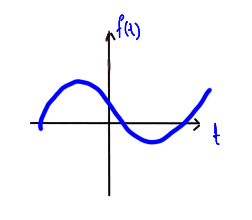
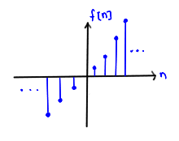

Definición y clasificasción
Definiremos a una señal como una función $f$, si el dominio es el conjunto $A$ y el rango el conjunto $B$, escribiremos
$$f:A \rightarrow B$$
Las señales se pueden clasificar de acuerdo a varios criterios. Un criterio se debe a la cardinalidad (de manera intuitiva, cuantos elementos tiene) de su dominio y contradominio.
Un conjunto se dice que es infinito numerable si existe una función biyectiva entre dicho conjunto y los números naturales, en caso de que el conjunto sea infinito y dicha relación no exista se dice que es infinito no numerable.
Diremos que un conjunto es discreto si es finito o infinito numerable. Como ejemplos:
$C=\left\{-2.345,1,\pi,e,-3.5,10 \right\}$
$\mathbb{N}$
$\mathbb{Z}$
$3\mathbb{Z}=\left\{...,-6,-3,0,3,6,9,... \right\}$
$T\mathbb{Z}=\left\{...,-2T,-T,0,T,2T,3T,... \right\}$
Diremos que un conjunto es continuo si es infinito no numerable.
$C=[0,1]$
$\mathbb{R}$
$C=(-3,5)$
$C=[a,b]$ con $a, b\in\mathbb{R}$
Se puede decir que los conjuntos son discretos si los elementos están "separados" (como los números naturales). En los conjuntos continuos esta "separación" no se puede distinguir (como los números reales). Por ejemplo, en el conjunto $\{-1.5, -1, 2, 3, 3.5\}$ el elemento inmediato posterior a 2 es el 3, mientras que en el conjunto $[0,1]$ el elemento inmediato posterior a 0.5 es indistinguible.
En particular suponemos que las señales modelan fenómenos que transcurren en el tiempo, es por ello que si $A$ es continuo, decimos que la señal es en tiempo continuo, y si $A$ es discreto diremos que la señal es en tiempo discreto. Se pensará que $A\subset\mathbb{R}$ ya sea en tiempo continuo o discreto.
Por costumbre las señales en tiempo continuo suelen ser definidas con la variable $t$, es decir, si vemos la notación $f(t)$ nos referimos a una señal en tiempo continuo. Las señales en tiempo discreto en ocasiones son definidas utilizando la variable $k$ o $n$, optamos por la variable $n$ además por lo regular se definen entre corchetes. Así al observar la notación $f[n]$ nos referimos a una señal en tiempo discreto.
Gracias a las definiciones mencionadas anteriormente se pueden clasificar a las señales como: analogícas, digitales, cuantizadas o muestreadas.
Una señal analogica es aquella donde el dominio es en tiempo continuo y el rango es un conjunto continuo. La gráfica de este tipo de señales se ve así:

Una señal digital es aquella donde el dominio es un conjunto en tiempo discreto y el rango es un conjunto discreto finito, la gráfica de este tipo de señales se ve así.
Las líneas verticales son una convención de visualización, es decir, no significa que un elemento del dominio tenga múltiples alturas asignadas (si no la relación no sería función) el elemento asignado es el que se encuentra al final de la línea vertical.
Una señal cuantizada es aquella donde el dominio es en tiempo continuo y el rango es un conjunto discreto finito. La gráfica de este tipo de señales se ve así:
La línea vertical nuevamente es una convención de visualización, la altura del elemento del dominio podría ser cualquiera sobre la línea vertical (pero solo una), incluso podría no estar asignada. Aquí comentamos dos cosas, los resultados que estudiaremos en señales no cambian si la función tiene este tipo de discontinuidades, por otro lado esta abstracción geométrica concuerda perfectamente con las mediciones electrónicas que se pueden realizar a circuitos eléctricos.
Es importante mencionar que dependiendo del autor que se consulte las definiciones podrían ser diferentes, por ejemplo, algunos autores definen a una señal cuantizada cuando $B$ (nos referimos al rango de la señal) es finito, es decir, $A$ (nos referimos al dominio de la señal) podría ser cualquier tipo de conjunto. En general esto es muy frecuente en ingeniería, los autores tratan de abstraer con herramientas matemáticas distintos fenómenos, y en principio no en todos las áreas hay estándares. No hay que preocuparse por este tipo de detalles, lo importante es entender que se esta haciendo independientemente del nombre que reciba.
Una señal muestreada es aquella donde el dominio es en tiempo discreto infinito y el rango es discreto infinito.

Los puntos suspensivos indican que la secuencia continúa indefinidamente. Es importante mencionar que esto solo es una abstracción matemática, es imposible almacenar una cantidad infinita de datos, así que cuando se trabaje con un dispositivo tecnológico construido con electrónica digital (Laptops, smartphones, tablets, etc. ), se tendrá siempre una cantidad finita de elementos (tal vez muchos, pero finita).
Resulta ser que la herramienta matemática con la que se trabajan las señales sólo depende del tipo de dominio de la señal (en tiempo continuo o en tiempo discreto), es decir, el rango podría ser un conjunto discreto o continuo. Así a partir de este momento solo nos referimos a señales en tiempo continuo o en tiempo discreto sin hacer referencia explícita a el rango.
Se ha decidido escribir los resultados para tiempo continuo y para tiempo discreto por separado, con la finalidad de no saturar a los lectores que están interesados en un dominio en particular.